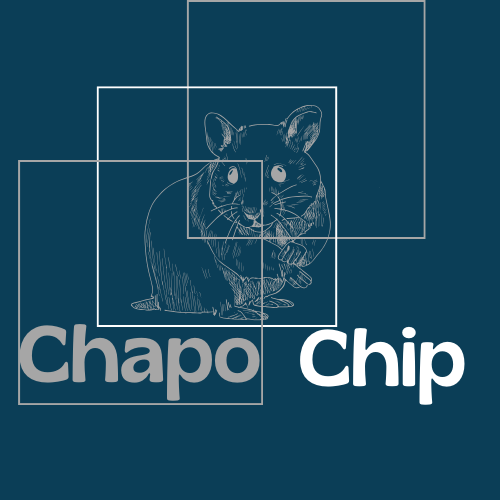

Chapo Chip es una empresa líder en el diseño y fabricación de procesadores de alto rendimiento, servidores escalables y soluciones de redes inteligentes. Sus productos están diseñados para satisfacer las necesidades de sectores como la inteligencia artificial, la computación en la nube, el Internet de las Cosas (IoT) y la automatización industrial. La empresa se distingue por su enfoque en la innovación, la eficiencia energética y la accesibilidad de sus soluciones.
Impulsar la transformación digital a través de soluciones tecnológicas innovadoras, eficientes y accesibles, que permitan a nuestros clientes alcanzar su máximo potencial en un mundo conectado.
Ser la empresa líder en tecnología de procesadores, servidores y redes en América Latina, reconocida por nuestra capacidad para ofrecer soluciones que combinen rendimiento, sostenibilidad y accesibilidad.
Fomentar la investigación y el desarrollo de tecnologías disruptivas que impulsen la competitividad de la empresa y de sus clientes. Destinar al menos el 15% de los ingresos anuales a proyectos de I+D.
Reducir la huella de carbono en todos los procesos de fabricación y operación. Utilizar materiales reciclables y energías renovables en la producción de procesadores y servidores. Cumplir con estándares internacionales de sostenibilidad, como ISO 14001.
Garantizar que todos los productos cumplan con los más altos estándares de calidad y rendimiento. Implementar sistemas de control de calidad en todas las etapas del proceso productivo. Certificar los productos bajo normas internacionales como ISO 9001.
Proteger la información de clientes y socios mediante protocolos de ciberseguridad avanzados. Cumplir con regulaciones internacionales como el GDPR. Realizar auditorías periódicas para identificar y corregir vulnerabilidades.
Contribuir al desarrollo de las comunidades donde opera a través de programas educativos y de capacitación en tecnología. Promover la inclusión y diversidad dentro de la empresa, garantizando igualdad de oportunidades para todos los empleados.
Actuar con integridad y transparencia en todas las operaciones comerciales. Rechazar prácticas corruptas o antiéticas en cualquier nivel de la organización.